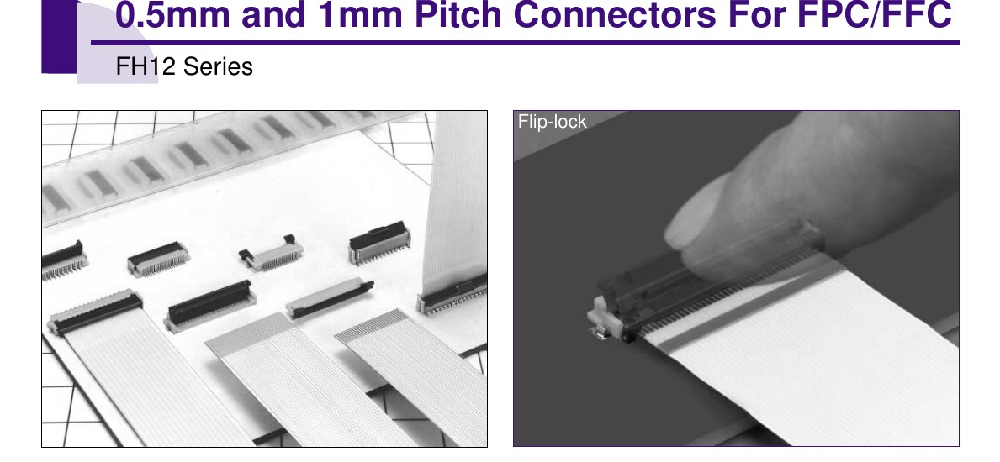
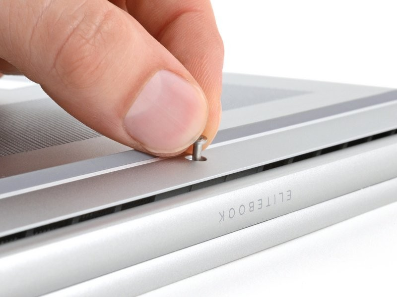
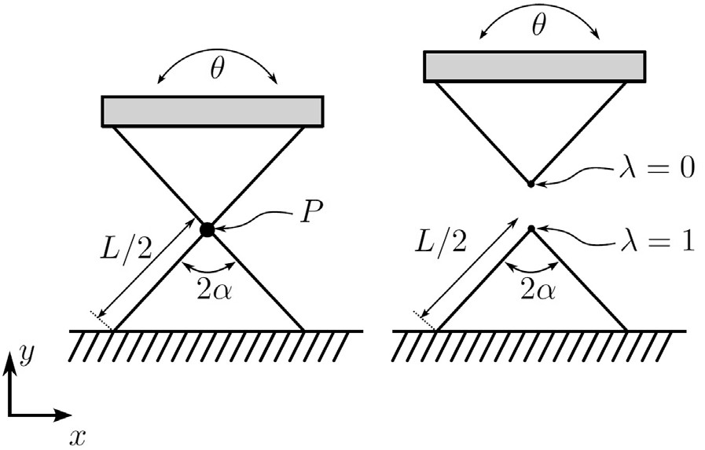

Product structure cases
结构设计案例库
按结构原理归档的产品与机械设计案例，覆盖壳体与外观件、连接与紧固、转轴与铰链、机构与运动、密封与防护、拆解与可维修、材料与工艺。参数只写来源里已有的，不估算、不编造。
分类入口
浏览全部
壳体与外观件
外壳拆分、外观件固定、壁厚/加强筋、开孔、覆面等「看得见的结构」。

连接与紧固
零件之间如何连在一起：卡扣、螺丝与嵌件、卡口、滑轨、磁吸、胶粘、焊接等。

转轴与铰链
一切转动连接：阻尼转轴、折叠屏铰链、360° 转轴、一体成型活动铰链。

机构与运动
会动的机构：按压弹跳、锁扣、齿轮/蜗杆、凸轮连杆、弹簧、柔顺机构、力反馈。

密封与防护
防水、防尘、防跌：密封圈、O 形圈、点胶、CIPG、透气膜、缓冲结构。

拆解与可维修
整机拆解分析、模块化、可维修设计，以及值得警惕的反面案例。

材料与工艺
注塑、钣金、压铸/CNC、3D 打印、包胶双色、表面处理对结构的约束与案例。
最新收录
全部案例
FPC 翻盖锁扣连接器：IRISO 三类锁与 Hirose FH12 前翻盖 ZIF
ZIF 排线连接器用翻盖或滑锁把 FPC/FFC 压到端子上：锁打开时插入力接近于零，锁合上后才建立接触压力；IRISO 将其分为滑块、前翻盖和后翻盖三类，Hirose FH12 是前翻盖（front flip）的具体系列，抬起锁杆、插到位再压下锁杆即可反复拆装，不必焊接排线。

Häfele Minifix 15 柜体连接件：半球头对中拉入杯形凹槽（对照 Hettich Rastex）
板式柜体常用的「壳体 + 连接杆」可拆连接，海福乐把它做成 Minifix：连接杆的半球头坐进壳体里的杯形凹槽，转动壳体时把头拉到凹槽中心并夹紧。官方原理页强调这是 **centric principle（对中原理），而不是传统偏心原理**；半圈下来拉进行程超过 5 mm，用来吃掉钻孔公差。Hettich Rastex 15 是同一类零件（Ø15 mm 锌压铸壳体、边距 24 或 34 mm、用凸轮把销拉到中心），本文只把它当作独立对照，不拆成第二篇。

PEM 与 Southco 防脱落面板螺丝：拧松后留在盖上，HP EliteBook 845 G8 五颗底盖钉
防脱落（captive）面板螺丝把螺钉限制在盖板的固定座或导套里：螺纹拧出啮合后，螺丝仍留在盖上，并可在弹簧作用下缩回；HP EliteBook 845 G8 的底盖就用五颗这类十字槽螺丝，拧松但不取出，再沿铰链侧解开卡扣即可开盖。

机械键盘热插拔轴座：PCB 插座夹住轴针脚，换轴不必焊接（对照 Cherry MX 轴内部）
热插拔轴座是焊在机械键盘 PCB 上的小型插座：两只弹性端子夹住轴体的两根金属针脚，换轴时沿针脚轴线把轴拔出再插入新轴，不必拆焊。佳达隆把 2.0 代做成铜合金端子 + 黑色高分子底座，规格书给出 4 点接触所需的开孔和 50 000 次机械寿命；凯华 CPG151101S11 则给出 3 kg 上限插入力与 200 gf 下限拔出力。它和 Cherry MX 机械键盘轴：轴心、螺旋弹簧与金交叉触点 不在同一层：本篇是板级插座，不是轴内部的触点。

橱柜磁吸门吸：只有磁力保持、没有机械锁死（对照 FIDLOCK）
普通橱柜磁吸门吸只有两件：带磁铁的壳体，和门上的金属吸片。关上时磁力把吸片吸住，把门留在关闭位置；打开就是把这对磁力拉开。海福乐把常用规格做成 4.0 kg 或 6.0 kg 吸力、锌合金可移动外壳；Sugatsune 把内部拆成壳体、轭铁、铁氧体磁铁和吸片。它和 FIDLOCK V-BUCKLE：磁吸引导到位后再由机械扣锁死 的差别正好在「锁」：本篇没有机械扣，长期保持主要靠磁力。

鲁尔锁定接头：6% 锥面负责密封，螺纹与锁耳只负责保持
鲁尔锁定接头（Luer lock）的液体密封发生在公头外锥面和母头内锥面的 6% 锥度贴合上；外围的锁圈内螺纹和母端锁耳（或相应凸耳）只负责把已经贴合的锥面保持在位，并不代替锥面做密封。这和四分之一转快锁「靠凸轮把板拉紧」不是同一条传力路径：这里拧紧锁圈是为了保持，漏液时继续加力往往修不好已经划伤或夹了异物的锥面。

Blum CLIP top BLUMOTION 杯型铰链：35 mm 杯孔、免工具卡底板与杯内集成阻尼
CLIP top BLUMOTION 把暗铰链做成「门上的 35 mm 杯 + 柜体上的 CLIP 底板」：杯孔按 Ø35 mm、深 13 mm 钻在门板上，铰臂对准底板中心按进去即可免工具上门；缓关阻尼做在铰杯里，可以拨开关关掉，不必再在转轴上另装一颗独立油缸。它和 旋转阻尼器（缓降盖板）：硅油黏性、水平型与垂直型的扭矩曲线 解决的都是「松手不要砸上」，但一个是铰链自己带阻尼，一个是转轴上的分立阻尼器。

十字交叉簧片枢轴（Cross-spring pivot）：交叉位置对寄生位移的影响与 C-Flex I-10 实例
十字交叉簧片枢轴用两片（或三片）簧片交叉构成转动中心：簧片可以在中点相交（λ = 1/2），也可以把交点移开；中点交叉在 α = 45°、θ = 30° 时寄生位移约为 L/31，把交点移到 λ = 1/2 ± √5/6 可以消掉二阶的横向寄生，但会让其中一段簧变得很短、应力升高。商品上的 C-Flex I-10 把三片簧放在两个互不接触的不锈钢套筒里钎焊成一体，额定最大转角 ±15°，作为量产实例写在本篇，不再按品牌拆第二篇。

卡特轮柔性铰链（Cartwheel flexure）：中心交叉梁转动副，对照切口短铰与十字簧片
卡特轮柔性铰链用两对（或可看成两组）柔性梁在中点交叉并在交点连成一体，形成一个比直圆、圆角短切口转角能力更大的柔性转动副。Naves 等把它解释成两套十字簧片（交叉位置 λ = 0 与 λ = 1）叠在一起，并给出寄生位移公式；在 α = 45°、θ = 30° 时寄生运动约为 L/162，小于中点交叉的普通十字簧片。它不是薄膜活铰，也不是短切口铰。

直圆切口柔性铰链（Right circular flexure hinge）：最薄处厚度 t、切口半径 R 与公式适用范围
直圆切口柔性铰链是在刚性块上用一对垂直于端面的对称圆柱面切出圆弧槽，最薄处留下厚度 t、切口半径 R、宽度 b，靠颈部局部弯曲提供近似转动，而不是靠轴销或薄膜弯折。吴鹰飞、周兆英给出了一般切口（圆心角 θₘ）和直圆（θₘ = 90°）的闭合柔度公式；Yong 等用有限元核对了 Paros–Weisbord 简化式与精确式在不同 t/R 下的误差，并划出选用范围。它和库内已有的薄膜活铰、恒扭力摩擦铰链不是同一类转动副。

ISO 集装箱角件扭锁：锁头插入椭圆孔后旋转约 90° 卡住
集装箱扭锁的锁头（锥头）插入 ISO 角件上的长圆孔，再旋转约 90°，锁头的长边转到孔的短边后面，从而卡住，用于箱与箱、箱与车辆或甲板之间的连接。它和面板上的四分之一转快锁虽然都是「转大约 90° 锁住」，但这里对的是 ISO 1161 角件标准孔和大载荷锥头，不是按总材料厚度选钉长的凸轮钉。角件孔口尺寸以厂商按 ISO 1161 标注的图纸为准：顶、底面长圆孔约 101.5 mm × 63.5 mm。ISO 1161:2016 给角件规定了材料最低值和设计载荷（例如顶部角件扭锁起吊 195 kN）；NIST 对半自动扭锁与角件组装的拉伸试验表明，破坏往往发生在角件孔口而不在锁轴，组装最大试验载荷约 408–710 kN。

RCC 远程柔顺手腕：把柔顺中心配置到装配孔口附近实现倒角自动对中
远程柔顺手腕（RCC / Remote Center Compliance）不用电机力控去“找孔”，而是把弹性元件布置成：接触力作用在一个位于或靠近插入倒角的远程柔顺中心时，只产生平移、不产生转动；力矩则只产生转动、不产生平移。这样倒角上的接触力会自动把轴与孔对齐。ATI 9116 系列用上下板之间的剪切垫把这个中心投射到工具侧以外；Draper 的 US 4,098,001 则用沿会聚半径布置的柔性元件，把中心放到插入件端部附近。它不是气弹簧重力平衡，也不是微动台里的直线导轨。
精选案例
评分 5 分FPC 翻盖锁扣连接器：IRISO 三类锁与 Hirose FH12 前翻盖 ZIF
ZIF 排线连接器用翻盖或滑锁把 FPC/FFC 压到端子上：锁打开时插入力接近于零，锁合上后才建立接触压力；IRISO 将其分为滑块、前翻盖和后翻盖三类，Hirose FH12 是前翻盖（front flip）的具体系列，抬起锁杆、插到位再压下锁杆即可反复拆装，不必焊接排线。
Häfele Minifix 15 柜体连接件：半球头对中拉入杯形凹槽（对照 Hettich Rastex）
板式柜体常用的「壳体 + 连接杆」可拆连接，海福乐把它做成 Minifix：连接杆的半球头坐进壳体里的杯形凹槽，转动壳体时把头拉到凹槽中心并夹紧。官方原理页强调这是 **centric principle（对中原理），而不是传统偏心原理**；半圈下来拉进行程超过 5 mm，用来吃掉钻孔公差。Hettich Rastex 15 是同一类零件（Ø15 mm 锌压铸壳体、边距 24 或 34 mm、用凸轮把销拉到中心），本文只把它当作独立对照，不拆成第二篇。
PEM 与 Southco 防脱落面板螺丝：拧松后留在盖上，HP EliteBook 845 G8 五颗底盖钉
防脱落（captive）面板螺丝把螺钉限制在盖板的固定座或导套里：螺纹拧出啮合后，螺丝仍留在盖上，并可在弹簧作用下缩回；HP EliteBook 845 G8 的底盖就用五颗这类十字槽螺丝，拧松但不取出，再沿铰链侧解开卡扣即可开盖。
机械键盘热插拔轴座：PCB 插座夹住轴针脚，换轴不必焊接（对照 Cherry MX 轴内部）
热插拔轴座是焊在机械键盘 PCB 上的小型插座：两只弹性端子夹住轴体的两根金属针脚，换轴时沿针脚轴线把轴拔出再插入新轴，不必拆焊。佳达隆把 2.0 代做成铜合金端子 + 黑色高分子底座，规格书给出 4 点接触所需的开孔和 50 000 次机械寿命；凯华 CPG151101S11 则给出 3 kg 上限插入力与 200 gf 下限拔出力。它和 Cherry MX 机械键盘轴：轴心、螺旋弹簧与金交叉触点 不在同一层：本篇是板级插座，不是轴内部的触点。
橱柜磁吸门吸：只有磁力保持、没有机械锁死（对照 FIDLOCK）
普通橱柜磁吸门吸只有两件：带磁铁的壳体，和门上的金属吸片。关上时磁力把吸片吸住，把门留在关闭位置；打开就是把这对磁力拉开。海福乐把常用规格做成 4.0 kg 或 6.0 kg 吸力、锌合金可移动外壳；Sugatsune 把内部拆成壳体、轭铁、铁氧体磁铁和吸片。它和 FIDLOCK V-BUCKLE：磁吸引导到位后再由机械扣锁死 的差别正好在「锁」：本篇没有机械扣，长期保持主要靠磁力。
鲁尔锁定接头：6% 锥面负责密封，螺纹与锁耳只负责保持
鲁尔锁定接头（Luer lock）的液体密封发生在公头外锥面和母头内锥面的 6% 锥度贴合上；外围的锁圈内螺纹和母端锁耳（或相应凸耳）只负责把已经贴合的锥面保持在位，并不代替锥面做密封。这和四分之一转快锁「靠凸轮把板拉紧」不是同一条传力路径：这里拧紧锁圈是为了保持，漏液时继续加力往往修不好已经划伤或夹了异物的锥面。
Blum CLIP top BLUMOTION 杯型铰链：35 mm 杯孔、免工具卡底板与杯内集成阻尼
CLIP top BLUMOTION 把暗铰链做成「门上的 35 mm 杯 + 柜体上的 CLIP 底板」：杯孔按 Ø35 mm、深 13 mm 钻在门板上，铰臂对准底板中心按进去即可免工具上门；缓关阻尼做在铰杯里，可以拨开关关掉，不必再在转轴上另装一颗独立油缸。它和 旋转阻尼器（缓降盖板）：硅油黏性、水平型与垂直型的扭矩曲线 解决的都是「松手不要砸上」，但一个是铰链自己带阻尼，一个是转轴上的分立阻尼器。
十字交叉簧片枢轴（Cross-spring pivot）：交叉位置对寄生位移的影响与 C-Flex I-10 实例
十字交叉簧片枢轴用两片（或三片）簧片交叉构成转动中心：簧片可以在中点相交（λ = 1/2），也可以把交点移开；中点交叉在 α = 45°、θ = 30° 时寄生位移约为 L/31，把交点移到 λ = 1/2 ± √5/6 可以消掉二阶的横向寄生，但会让其中一段簧变得很短、应力升高。商品上的 C-Flex I-10 把三片簧放在两个互不接触的不锈钢套筒里钎焊成一体，额定最大转角 ±15°，作为量产实例写在本篇，不再按品牌拆第二篇。
卡特轮柔性铰链（Cartwheel flexure）：中心交叉梁转动副，对照切口短铰与十字簧片
卡特轮柔性铰链用两对（或可看成两组）柔性梁在中点交叉并在交点连成一体，形成一个比直圆、圆角短切口转角能力更大的柔性转动副。Naves 等把它解释成两套十字簧片（交叉位置 λ = 0 与 λ = 1）叠在一起，并给出寄生位移公式；在 α = 45°、θ = 30° 时寄生运动约为 L/162，小于中点交叉的普通十字簧片。它不是薄膜活铰，也不是短切口铰。
直圆切口柔性铰链（Right circular flexure hinge）：最薄处厚度 t、切口半径 R 与公式适用范围
直圆切口柔性铰链是在刚性块上用一对垂直于端面的对称圆柱面切出圆弧槽，最薄处留下厚度 t、切口半径 R、宽度 b，靠颈部局部弯曲提供近似转动，而不是靠轴销或薄膜弯折。吴鹰飞、周兆英给出了一般切口（圆心角 θₘ）和直圆（θₘ = 90°）的闭合柔度公式；Yong 等用有限元核对了 Paros–Weisbord 简化式与精确式在不同 t/R 下的误差，并划出选用范围。它和库内已有的薄膜活铰、恒扭力摩擦铰链不是同一类转动副。
ISO 集装箱角件扭锁：锁头插入椭圆孔后旋转约 90° 卡住
集装箱扭锁的锁头（锥头）插入 ISO 角件上的长圆孔，再旋转约 90°，锁头的长边转到孔的短边后面，从而卡住，用于箱与箱、箱与车辆或甲板之间的连接。它和面板上的四分之一转快锁虽然都是「转大约 90° 锁住」，但这里对的是 ISO 1161 角件标准孔和大载荷锥头，不是按总材料厚度选钉长的凸轮钉。角件孔口尺寸以厂商按 ISO 1161 标注的图纸为准：顶、底面长圆孔约 101.5 mm × 63.5 mm。ISO 1161:2016 给角件规定了材料最低值和设计载荷（例如顶部角件扭锁起吊 195 kN）；NIST 对半自动扭锁与角件组装的拉伸试验表明，破坏往往发生在角件孔口而不在锁轴，组装最大试验载荷约 408–710 kN。
RCC 远程柔顺手腕：把柔顺中心配置到装配孔口附近实现倒角自动对中
远程柔顺手腕（RCC / Remote Center Compliance）不用电机力控去“找孔”，而是把弹性元件布置成：接触力作用在一个位于或靠近插入倒角的远程柔顺中心时，只产生平移、不产生转动；力矩则只产生转动、不产生平移。这样倒角上的接触力会自动把轴与孔对齐。ATI 9116 系列用上下板之间的剪切垫把这个中心投射到工具侧以外；Draper 的 US 4,098,001 则用沿会聚半径布置的柔性元件，把中心放到插入件端部附近。它不是气弹簧重力平衡，也不是微动台里的直线导轨。